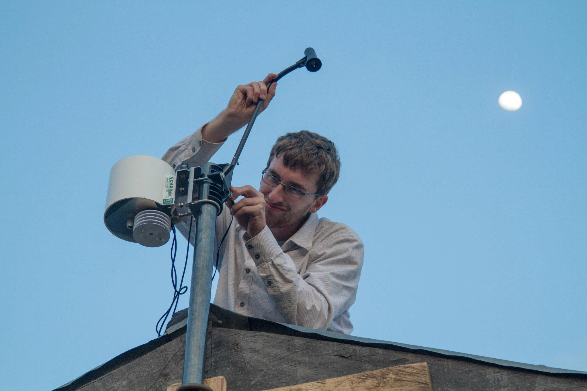
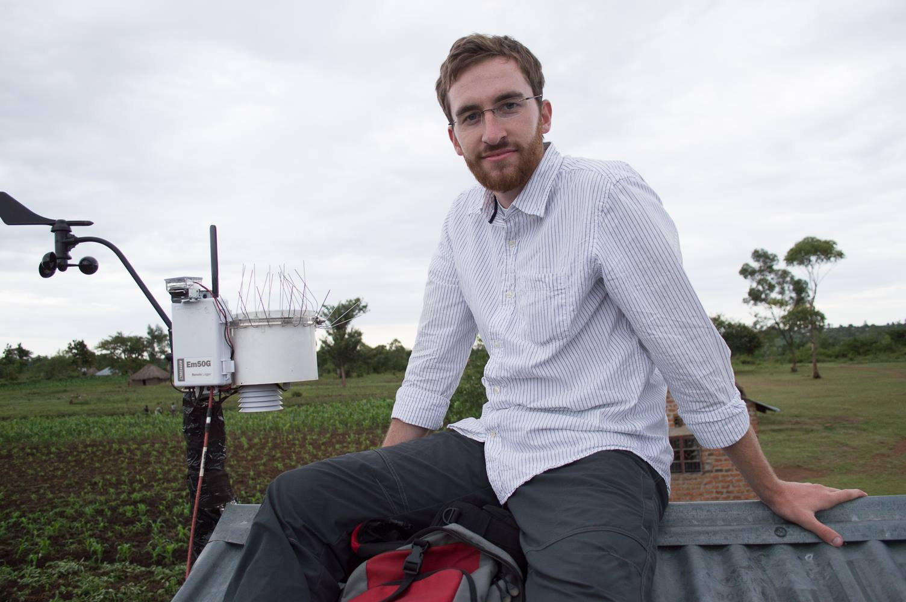
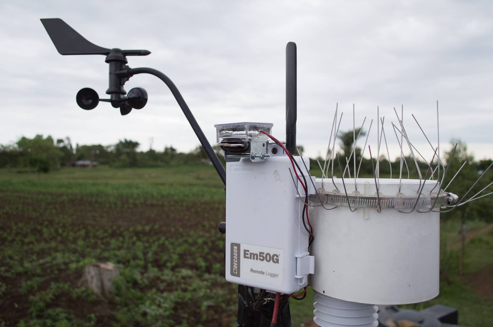

Changing research topics
POSTED 21 MAY 2014
When I received a Boren Fellowship to come to Kenya, my plan was to research the impact of weather insurance. I wrote about this in one of my first posts so I won't dwell on the subject. Suffice it to say the idea was that I would interview two groups of farmers: those who have weather insurance and those who don't. The difference between the two groups is the impact of the insurance, which is designed to protect farmers from drought and thus help alleviate poverty. My job was to investigate how effective weather insurance was for actually accomplishing this goal. After previously writing a letter of support for my fellowship application and saying they were excited to work with me, for reasons I won't get into here the weather insurance organization I had partnered with decided to cancel the project.
Starting over
Just like that, all the work I had put into the project was lost: completing a literature review on weather insurance, writing the farmer survey, applying for a research permit from the Kenyan government, and receiving clearance to conduct research on human subjects from OSU's Institutional Review Board. It was frustrating to say the least but also a teachable moment. Life happens and you don't always have control. To be alive in the world means to adapt, to be resilient.
Life lessons aside, I still needed a new research topic for my master's thesis. When I was home for two weeks during the holidays I had lunch one day with my friend Jaynie. We discussed writing a paper we had been kicking around for a while based on remote monitoring data I had collected while working with Engineers Without Borders in Kenya. Jaynie said she was too busy with PhD applications and her own thesis to put any significant effort into the paper. Then an idea struck me: what if I turned that paper into my thesis? There were no human subjects, meaning I wouldn't have to go through IRB again. And I wouldn't be dependent on any third party.
Remote monitoring
I came back to Kenya from my holiday break with a new thesis topic: remote monitoring in international development. Put simply, remote monitoring is a powerful tool for organizations working on poverty alleviation (in this case Engineers Without Borders) to monitor the status of the projects they implement without having to actually visit the project site. Working in Lela, our EWB team built a rainwater catchment system at the Lela Primary School to provide drinking water for students.

After the system was built, I installed a weather station at the school as a pilot for TAHMO in Kenya.
The weather station included sensors for wind speed and direction, rainfall, temperature, relative humidity, and solar radiation. In addition, a sensor placed inside one of the water storage tanks at the school measured the electrical conductivity, temperature, and depth of the stored water.

The power of this weather station is that it uploads data daily over the GSM network in Kenya, making data available from anywhere in the world. Thus, from my laptop in the U.S. I can check the most recent weather in Lela. Even more powerfully, I can check the performance of the rainwater catchment system in near real time. Since we know the rainfall at the school and the area of the school roof, we know how much water is available to be captured. And since I can see the change in depth of water in the storage tank, I know how much water was actually captured. Thus I'm able to measure the capture rate of the system. I can also see how much water is being used by students at the school on a daily basis.
Unfortunately, the solar panel used to power the sensors failed after six months. In March of this year I received a new power supply and, after a bit of soldering, went to Lela to install it. Now the sensors are up and running once again.
Of course Paul was there to help me out.

Here's a closeup of the weather station.
For my thesis, I'm writing a case study on how remote monitoring can be used to promote sustainable development. The idea is applicable to more than just rainwater catchment systems. Take wells for example. An estimated 100,000 African wells are in disrepair. Imagine if you could monitor the performance of each well remotely, then send a repairman out when one breaks. With remote monitoring, this is now possible.
In the case of Lela's rainwater catchment system, using remote monitoring I was able to detect a leak in the storage tank and order a repair. I'm also able to put data to the assumptions we made during the design phase regarding how much water would be available to students. In short, remote monitoring ensures a project is not forgotten after it is completed.
This is an exciting research topic for me: it's practical, direct, and my own. I look forward to completing and defending my thesis when I return to OSU in the fall.